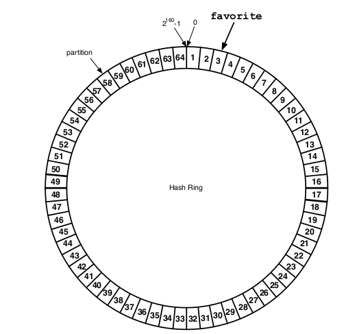
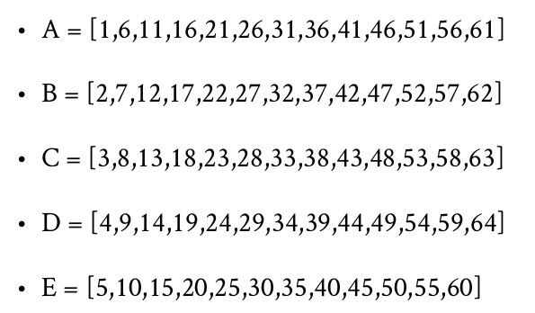

Python and Riak DB
A perfect couple for huge scale distributed computing
twitter @Narenarya3
Github @narenaryan
What Riak can do?
Riak is a database that helps any business by supporting these 4 features
Why care fault tolerance?
Companies rely on data to power their day-today operations. Even minutes of application downtime can mean lost sales, a poor user experience, and a bruised brand.This can add up to millions in lost revenue
Never lose a customer in the business due to latency
What exactly Riak is?
Different than traditional relational databases and other “NoSQL” (non-relational) databases, Riak offers benefits of enormous availability, replication and monitoring – all in a highly distributed deployment
- Built on Erlang for rock solid stability
- Open source implementation of Dynamo paper by Amazon
No 2:00PM emergency calls for an engineer
Distributed databases
Data distrbution is achieved through two things.
- Replication
- Partition
Replication
Partition
CAP Theorom
Brewer's CAP Theorom states that CAP loosely states that you can have a C (consistent), A (available), or P (partition-tolerant) system, but you can only choose any 2 of them at a particular time.
- Consistency + Partition Tolerance
- Availability + Partition Tolerance
Riak's tunable CAP parameters
Riak’s solution is based on Amazon Dynamo’s novel approach of a tunable AP system. Riak has a two knob theory which sets both levels of availlability and consistency.- Level of Availability
- Level of Consistency
Riak N-R-W strategy
- N - No of nodes to replicate data
- R - No of nodes to be read to confirm a successful read
- W - No of nodes to write to confirm a successful write
N-R-W
Riak's Consistent Hashing Strategy
 Operational simplicity
# Add a node to existing cluster
$ riak-admin cluster join riak@127.0.0.1
# Remove a node from existing cluster
$ riak-admin cluster leave NODE
# Replaces a failed node with new one in cluster
$ riak-admin cluster replace NODE_1 NODE_2
# Shows the changes we made to cluster
$ riak-admin cluster plan
# Only modifies cluster state after commiting
$ riak-admin cluster replace NODE_1 NODE_2
#Check ring status
$ riak-admin cluster status
Do you know, Riak is BASE
- Basically Available
- Soft-state
- Eventually consistent
- Durable

Why Python?
Fun |
Power |
Love |
Zillion reasons
I love Python
because of it's- Expressive power
- Simplicity
- Multi domain expertise
- Mammoth library base
more than that....
Does Riak has a Python client
Yes, Riak has six official clients for Major programming languages.
Python is in first three clients Riak 1.0 supported.Riak for impatient
import riak
client = riak.RiakClient()
bucket = client.bucket('developers')
person = bucket.new('python_developer_1', data={
'name': 'Naren',
'age': 22,
'company': 'Mr. Startup!',
})
person.store()
4 simple methods to start
- RiakClient
- bucket
- new
- store
Basic python client methods
RiakClient - creates a client connnection to Database
bucket - Creates a bucket if not exists, else uses it
new - creates a new key-value data pair
store - Stores key-value pair in database
Two more methods to complete simplicity
get - Fetches a bucket data row using key
get_data - Fetches value associated for that key
See how code works
import riak
client = riak.RiakClient()
bucket = client.bucket('developers')
naren = user_bucket.get('python_developer_1')
naren_dict = naren.get_data()
Riak client variations
RiakClient()
RiakClient(protocol='http', host='127.0.0.1', http_port=8098)
RiakClient(nodes=[{'host':'127.0.0.1','http_port':8098}])
Nodes are the remote systems or virtual containers running Riak Servers . When your data size is increasing grow your data horizontally by allocating more nodes to cluster
Riak Search
Riak Search 2.0 is an integration of Solr (for indexing and querying) and Riak (for storage and distribution).It has search capability on distributed riak servers
results = client.fulltext_search('famous', 'name_s:Lion*')
print results
print results['docs']
Riak Map Reduce architecture
Riak has a very good support for map-reducing of big data
What we are gaining
The advantages of using Riak and Python are:
- Fast and easy setup
- Developer friendly stack
- Less operational cost
- Horizontal scaling on demand
- Rock solid consistency
- Now Flask and Django projects can scale on huge data
Where you should not use Riak?
You should not use Riak
- If you have average sized data needs.
- If you are nostalgic about SQL and queries
If you don't have any problem now